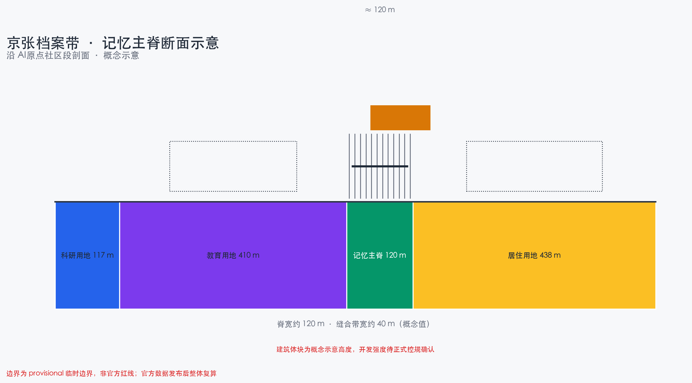
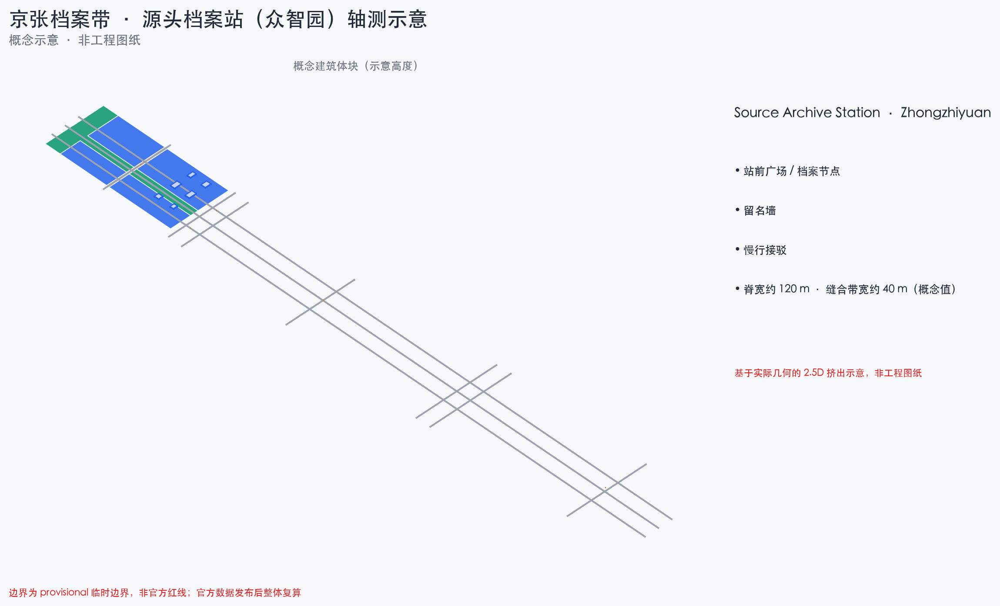

京张档案带 · 把开放共创写进城市档案
记忆主脊 · 三座档案站 · 两翼记录器 · 档案章程六条
provisional boundary
conceptual recommendation
bilingual v1
spatial review PASS
档案章程（Archive Charter）
京张档案带把开放共创写进城市档案：贡献即入档、服务即留档、纠错即补档、荣誉即档案。沿京张遗址公园设记忆主脊，众智园、AI原点社区、大钟寺分设源头/转化/场景三座档案站；全部空间为基于 provisional 边界的概念建议。
① 公开入档：AI 服务与共创成果默认建档、公开可读
② 可检索：档案条目带机器可读标识，人人可查
③ 可纠错：居民可就服务读数申请复核，纠错一并入档
④ 隐私边界：只记贡献、不记轨迹，数据分级
⑤ 荣誉规则：留名与荣誉由人类与专业团队终审
⑥ 档案即证据：指标/来源/假设/自检同步入档
核心指标（EPSG:4548 复算，与 metrics.json 一致）
总体设计范围 / Overall Design Area
11,412,825
绿地率 / Green ratio
15.23%
公共空间占比 / Public space ratio
3.46%
建筑基底面积 / Building footprint
89,569
建筑数量 / Building count
17
道路中心线总长 / Road length
37,308
重点区数量 / Key areas
3
Figures


空间深度示意


更新项目 · 分期（Renewal projects · Phasing）
| ID | Project | Phase |
|---|---|---|
| JZA-01 | 记忆主脊南段贯通 | 一 |
| JZA-02 | 贡献入档台试点 | 一 |
| JZA-03 | 服务档案公示板×8 | 一 |
| JZA-04 | 荣誉年鉴节点 | 一 |
| JZA-05 | 开源提交碑 | 一 |
| JZA-06 | 场景测试街区 | 二 |
| JZA-07 | 模型评测与标准研讨场 | 二 |
| JZA-08 | 大钟寺四象限步行连通 | 一 |
| JZA-09 | 小月河场景记录翼绿廊 | 二 |
| JZA-10 | 众智园源头档案站 | 三 |
| JZA-11 | 大钟寺场景档案站 | 三 |
| JZA-12 | 档案开放季年度运营 | 持续 |
| JZA-13 | 档案数据平台与章程 | 二 |
任务覆盖（compliance_matrix 映射）
| ID | Task |
|---|---|
| agent.1 | 一带总体概念与功能统筹 |
| agent.2 | AI全栈自主创新体系与世界级AI创新生态 |
| agent.3 | AI+场景赋能与智能化AI活力城市 |
| agent.4 | AI公共空间、新业态与朝圣地标 |
| agent.5 | 百年京张、中关村与AI新文化叙事 |
| agent.6 | 全球AI创新活动与长期运营 |
AI 场景档案卡（12 张，含 3 测试验证）
贡献入档台 · 服务档案公示板 · 记忆年代装置 · 荣誉年鉴节点 · 开源提交碑 · 场景测试街区(TEST) · 模型评测与标准研讨场(TEST) · AI 文化导览 · 智能公共服务驿站 · 智能原生消费街区 · 小月河体验路径 · 档案开放季主场(TEST)
自检状态
| Gate | State |
|---|---|
| 空间审查 | PASS（仅临时边界提示） |
| 专业证据 | PASS |
| 视觉打包 | 更新中 |
| 确定性校验 | 图表/双语补齐后全 PASS |
资料来源与状态
- OFFICIAL-ANNOUNCEMENT · 资格预审公告（formal）
- AGENT-TASKBOOK · 智能体任务书摘录（formal）
- SITE-PACKAGE / SOURCE-REGISTRY（formal 依据与分级）
- PROVISIONAL-BOUNDARIES（provisional_only，非红线）
- 专业标准本地快照 ×5（formal）
- OPB/控规/权属/文保等缺口 → 待正式数据补齐
关键假设
- A-BOUNDARY-PROVISIONAL：边界为临时几何，官方发布后整包重算
- A-CONTROLS-001：控规指标缺失，开发强度为概念建议
- A-ARCHIVE-001：档案只记贡献不记轨迹，荣誉人类终审